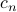
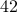
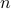
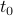

Interpreting Fourier Series
‘‘Oh, we're on the air! Happy Friday, everyone!’’.
We began class by recapping the ‘magic’ that we discovered last time.
Suppose that we have a periodic function  with period 1 (i.e., for all
with period 1 (i.e., for all  ), and suppose that it can be written as a sum of complex exponentials with mystery coefficients as
), and suppose that it can be written as a sum of complex exponentials with mystery coefficients as
Then the mystery coefficients  can be found via the formula
We made a number of comments on this result.
The coefficients are called Fourier coefficients
This sum of complex exponentials is called a Fourier series.
Each term is known as a frequency component or a harmonic, and the set of all frequencies present in the sum is known as the spectrum.
The zero'th Fourier coefficient is the average value of
, since . (Remember that the average value of a function is its integral the divided by the length of the interval.)If
is real-valued, then the coefficients satisfy a conjugate symmetry property, . The notion of symmetry will come up quite a bit in the topic of Fourier analysis!The coefficients can be found by integrating over any interval of length 1, not just the range 0 to 1. So for instance, we can integrate from to , or from to , it doesn't matter. Intuitively, the reason is that because of periodicity, the different parts of the integral just get cycled around.

The most important comment was about relabeleing the Fourier coefficients as . If we make this seemingly innocuous change, our formulas now look like
and
In reality, this change of notation is not completely useless; it underlies a deeper philosophical point:
We can consider the Fourier coeffients  as a transform of
as a transform of  , from its time-domain representation into its frequency-domain representation
, from its time-domain representation into its frequency-domain representation  .
.
In some sense, the Fourier coefficients are not ‘‘merely’’ the weights on terms in an expansion of of ; they are a full-girthed function in their own right. The coefficients  contain exactly as much information as the full function , but they are just ‘‘transformed’’ into a different representation – the frequency-domain representation, rather than the time-domain transformation.
contain exactly as much information as the full function , but they are just ‘‘transformed’’ into a different representation – the frequency-domain representation, rather than the time-domain transformation.
Notice that while the function is defined for all real (i.e., a continuous variable), its transformed counterpart only takes on values for integer  (i.e., a discrete variable.) The reason for this has to do with the periodicity of . If were not periodic, then its transformed counterpart would have a continuous rather than discrete spectrum. Later in the course, we will flesh out this analogy in full detail; it turns out that the Fourier Transform is the appropriate generalization of Fourier Series for non-periodic functions, and in general, the Fourier Transformed function will have continuous, rather than discrete frequencies.
Example: Square Wave
Now we could keep going on in full generality about the properties of Fourier Series, but it's best to demonstrate the concepts in a concrete example. This particular example is also nice because it illustrates why Fourier's claim caused such a scandal.
Let us consider a square wave, a common signal encountered by electrical enginers. There's a number of ways to normalize the height and width of the square; the one that we'll use today is the definition
Note that we only need to define the function in the range (or any interval of length 1, for that matter), since the periodicity will define the function on the rest of the domain for us.
To find the Fourier Series for this square wave, we need to find its Fourier coefficients, so we plug in into the expression for , and integrate. The integral splits into two parts, one for each piece of , and we find that the Fourier coefficients are
(You can figure out the last step and the casework for even and odd by drawing a little picture of the complex plane:)

Putting these coefficients back into the weighted sum of harmoincs gives us the Fourier expansion of the square wave:
Notice that we are adding together infinitely many terms on the RHS! No wonder Fourier caused such a great ‘‘gasp of breath’’ in Paris when he first introduced the idea. Should we really believe that the square wave is represented by an infinite series?
Well, Prof. Osgood told us one comforting fact: we shouldn't be surprised about having an infinite number of terms. Back in calculus, we learned that if we added two continuous functions, we would end up with a continuous function. In fact, this result holds for the sum of any finite number of continuous functions. However, since the square wave is a discontinuous function, it's impossible to represent it by any finite sum of sinusoids; we need an infinite sum in order to represent it!
Apparently, this crazy idea led to a scandal in the Parisian mathematical community.
Convergence of Fourier Series
The touchy subject of infinite Fourier series leads naturally to questions of the convergence. Remember that infinite series are a tricky business:
When you add together an infinite number of terms, sometimes you get a infinite answer, and sometimes you get an finite answer, and sometimes the answer depends on the order that you add the terms!
When we're talking about the convergence of infinite Fourier series, we are really asking two separate questions:
Say our function is represented by an infinite Fourier series such as
and we plug in a point  into the LHS and the RHS of the equation. Then,
Does the RHS converge at all? (i.e., does the limit exist?)
If so, does the RHS converge to the actual value of the function? (i.e., is the limit the same as ?)
It turns out that these questions are very difficult for mathematicians to answer. Part of the reason why is that sinusoids oscillate between being positive and being negative, and they might cancel out. Typically in analysis, the way we prove that things converge is that the partial sums are bounded and the terms get smaller and smaller…but if there's a chance that terms might cancel each other out, then life gets more complicated.
Thankfully, for most applications, we don't need to worry too much about the subtelties of convergence. There is a useful theorem that covers the behavior of most functions that we encounter on a day-to-day basis:
Say we have a periodic function with period 1. Assume that
- is bounded (i.e., there's some such that for all ), and
- and its derivative are piecewise continuous (i.e., we allow for a finite number of jump discontinuities, and we assume is differentiable everywhere else).
Suppose that we can compute the fourier coefficients . Then the Fourier Series
is pointwise convergent everywhere.
The value that the series converges to depends on whether is continuous at that point:
At points where
is continuous, the Fourier series converges to the value of the function; i.e., 
At points where
has a jump discontinuity, the Fourier series converges to the average of the values of the two sides of the jump; i.e.,
The key takeaways of the theorem are that Fourier Series will converge properly for most functions that we will encounter. Even if the function has jump discontinuities, the Fourier Series will ‘‘average out’’ the jump and converge to the average of the two sides. It's nice that the theorem covers our bases for jump discontinuities, since we do often encounter jump discontinuities in applications: square waves, triangle waves, and sawtooth waves in signal processing; hard-sphere potentials in physics, and more.
There's a lot more to the story of the convergence of Fourier Series – it's possible to spend an entire year discussing different conditions on and their corresponding guarantees – but for most practical purposes, this theorem suffices. There's also much more structure to the Fourier Series itself, which we'll discuss next class. For now, we'll continue to another application that illustrates how Fourier Series can be used.